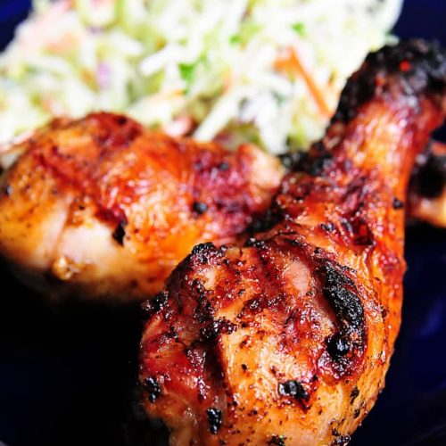

Chicken Recipe

Description
For years now, we’ve used this simple grilled chicken marinade that I quickly throw
together when grilling chicken. It uses ingredients that you’ll most likely have on hand.
If not, I urge you to buy them the next time you are at the grocery store, along with your
favorite cuts of chicken and make it! It makes
the perfect marinade for the BEST grilled chicken I’ve ever had!
Ingredients
To make this, you’ll need:
- Olive oil
- Salt
- Pepper
- Cumin
- Paprika
- Cayenne
- Garlic
- Onion
- Fresh parsley
- Beer, ginger ale, apple cider (not apple cider vinegar), or apple juice<
Steps
- Stir. Stir together all of the ingredients in a medium mixing bowl.
- Pour. Then pour the marinade over the chicken in a large zip top or other airtight container.
If using a zip top bag, press as much air as possible out of the bag as you seal.
- Chill. Make sure that all of the chicken is well coated with the marinade.
Arrange in the refrigerator and chill for at least an hour.